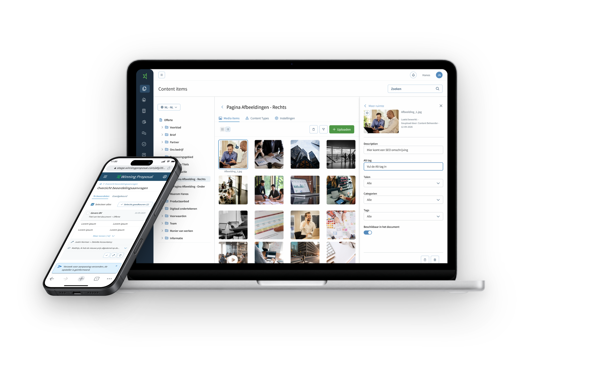
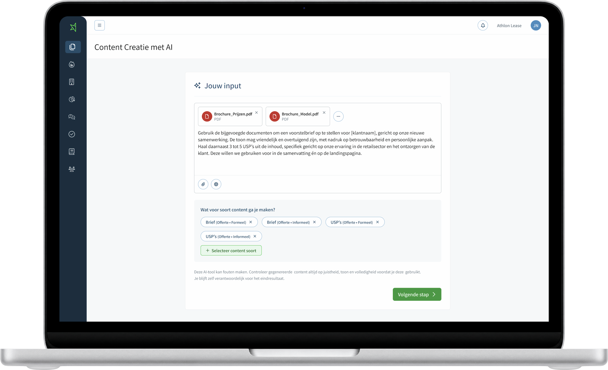
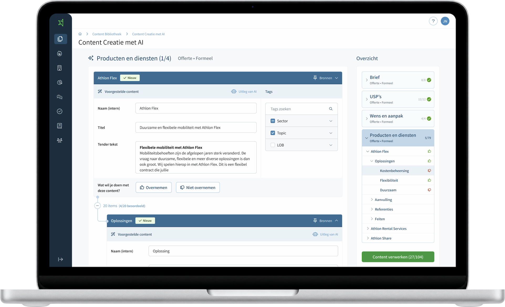

Winning Proposal B2B SaaSSenior Product Designersinds medio 2024
Een AI-ondersteund B2B-offerteplatform waarmee salesteams sneller sterke voorstellen maken
Sinds medio 2024 werk ik als vaste senior product designer aan de doorontwikkeling van Winning Proposal. Samen met product owners en development werk ik aan uiteenlopende features, van gebruikersonderzoek en prototypes tot livegang.
- RolSenior Product Designer
- PeriodeMedio 2024–heden
- Team2 product owners, 12 developers, 4 designers
- FocusVan onderzoek tot livegang

De opdracht
Binnen een doorlopende samenwerking ben ik verantwoordelijk voor het UX-ontwerp van de algemene functionaliteit van Winning Proposal. Per vraagstuk werk ik samen met product owners en development om de gebruikersvraag te onderzoeken en een passende oplossing uit te werken en te valideren met klanten en stakeholders.
Het terugkerende probleem
Winning Proposal moet salesteams helpen om efficiënt overtuigende offertes te maken, met goede content, betrouwbare gegevens en controle over het proces. In de praktijk staan daar verschillende knelpunten tussen: versnipperde content, tijdrovend beheer en klantinformatie die handmatig moet worden verwerkt. Mijn uitdaging is om die knelpunten te vertalen naar oplossingen die het werk makkelijker maken en tegelijk de kwaliteit en betrouwbaarheid van offertes bewaken.
Mijn aanpak
Ik onderzoek waar klanten en gebruikers vastlopen en wat zij nodig hebben. Daarvoor combineer ik interviews met benchmarkonderzoek en werk ik onderzoeksinzichten uit in persona’s. Ook faciliteer ik regelmatig interne workshops om bevindingen te bespreken en samen oplossingsrichtingen te verkennen. De inzichten vertaal ik naar flows en prototypes, die ik met klanten en stakeholders valideer. De uitwerking stem ik af met product owners en development. Tijdens de samenwerking heb ik inmiddels ruim vijftig onderzoekssessies uitgevoerd.
Ik werk onder meer aan de content- en mediabibliotheek, goedkeuringsflows, vervolgdocumenten, dashboards en AI-contentcreatie. Om de samenhang tussen deze onderdelen te bewaken, heb ik een design system opgezet dat ik doorlopend onderhoud. Dit vormt de basis voor consistente componenten en interacties binnen het platform.
AI-contentcreatie
Het vullen en actueel houden van de contentbibliotheek bleek tijdrovend; een probleem dat ik bij stakeholders ophaalde en valideerde. AI-contentcreatie maakt het mogelijk om bestaande brochures en documenten om te zetten naar herbruikbare content. De ontwerpuitdaging zat in de gelaagde structuur daarvan: hoe laat je gebruikers de gegenereerde inhoud beoordelen zonder dat ze het overzicht verliezen?
Ik onderzocht bestaande interactiepatronen, sprak met gebruikers en bracht use cases en user flows in kaart. Ik koos voor een uitvouwbare structuur waarin gebruikers steeds een niveau dieper kunnen gaan en onderdelen afzonderlijk kunnen goed- of afkeuren. In een volgende stap bevestigen ze hun selectie. Pas daarna wordt de goedgekeurde content opgenomen in de bibliotheek.


Het resultaat
De samenwerking heeft uiteenlopende live features opgeleverd, van contentbeheer en workflows tot dashboards en AI-ondersteuning.
Contentbibliotheek vullen
Van 2–3 weken naar enkele dagenGemeten doorlooptijd bij het vullen van de contentbibliotheek met bestaande documenten via AI-contentcreatie.
AI haalt de content uit de documenten en organiseert deze automatisch in mappen en geneste contentonderdelen. Gebruikers kunnen de inhoud beoordelen en met AI verfijnen voordat zij deze definitief overnemen in de bibliotheek. Zo vervalt veel handmatig invoer- en ordeningswerk, terwijl gebruikers de controle over de inhoud behouden.
Wat dit laat zien
Ik vertaal complexe productvraagstukken naar onderbouwde ontwerpkeuzes en werk die samen met product owners en development uit tot werkende functionaliteit. Daarbij kijk ik verder dan de afzonderlijke feature: ik bewaak de samenhang binnen het platform en de balans tussen gebruiksgemak, inhoudelijke kwaliteit en controle voor de gebruiker.